長期トレンド
JKMとJEPXシステムプライスの推移グラフ
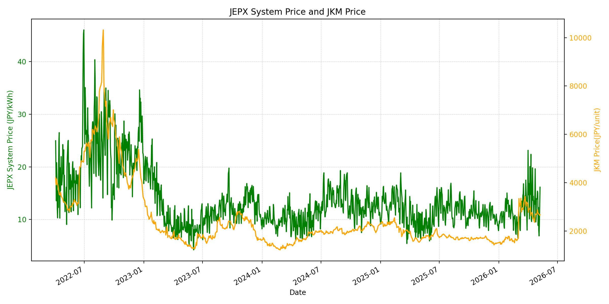
WTIの推移グラフ
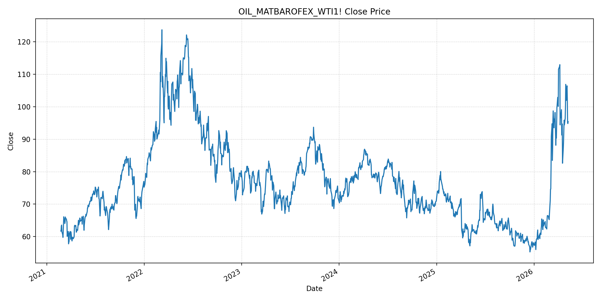
JEPXエリアプライスグラフ（直近一年分）
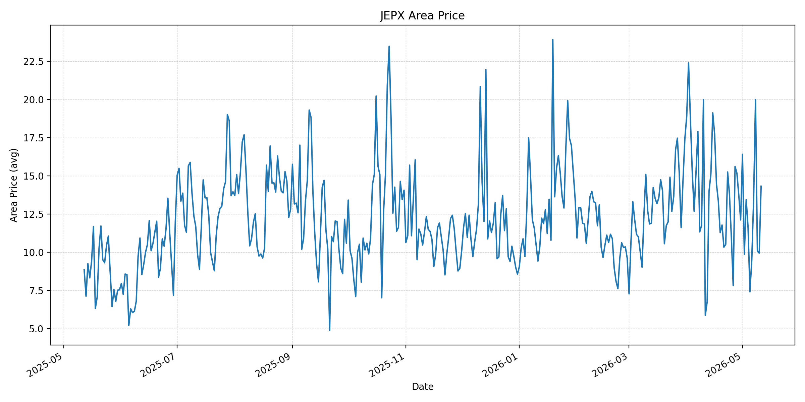
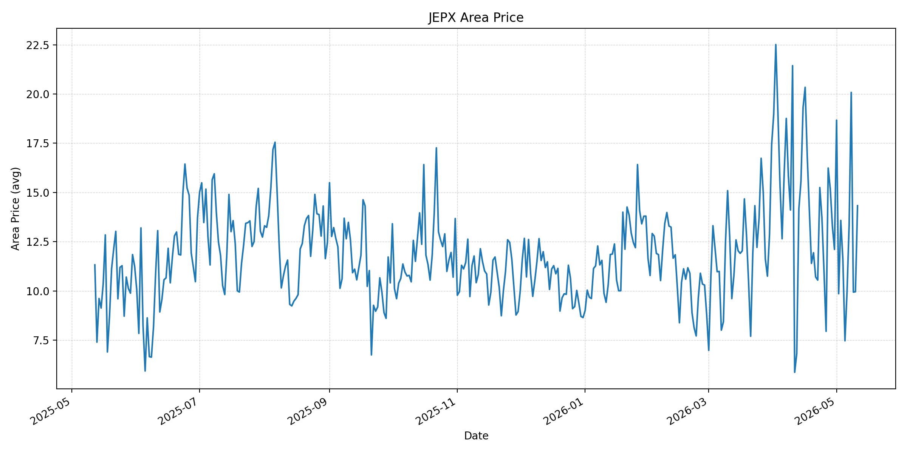
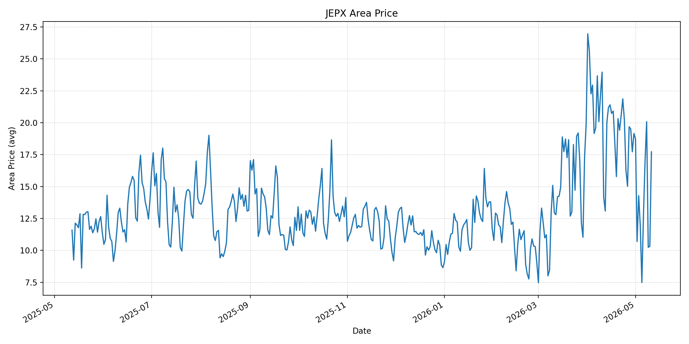
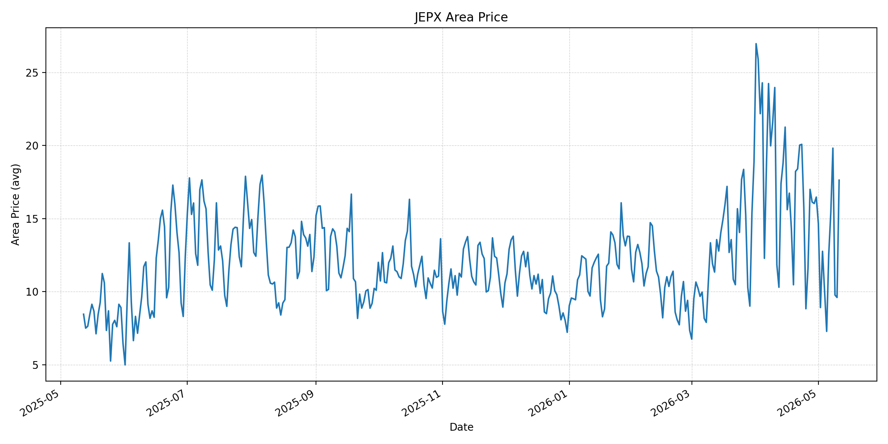
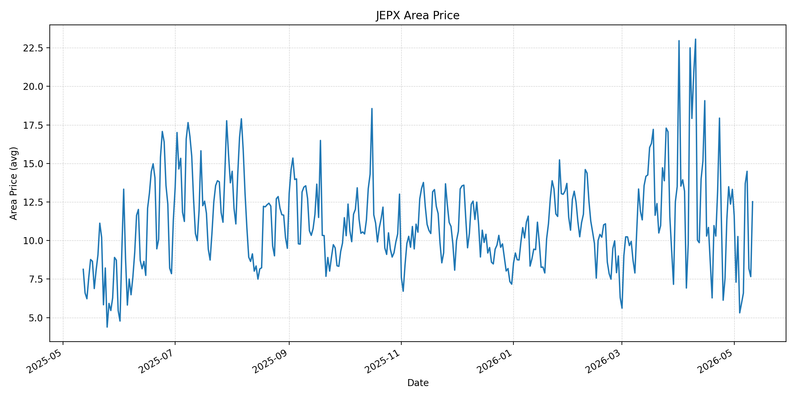
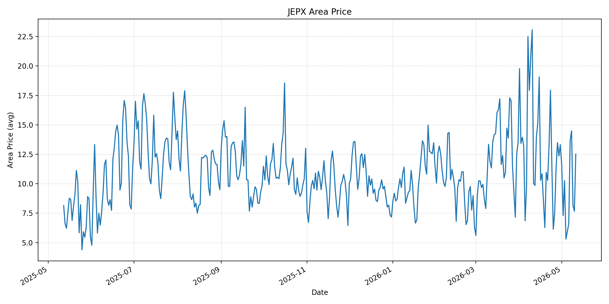
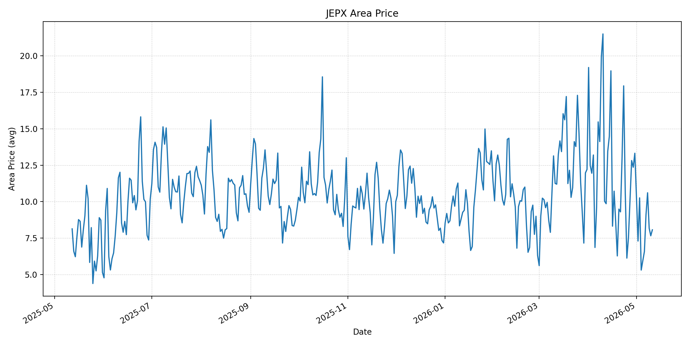
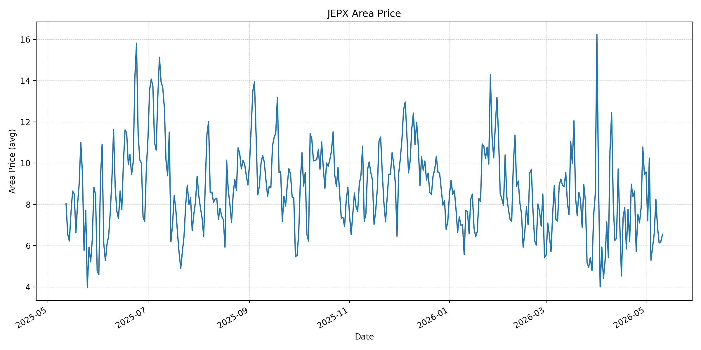
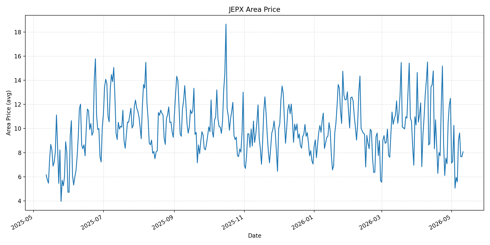
短期トレンド
JKMとJEPXシステムプライスの推移グラフ
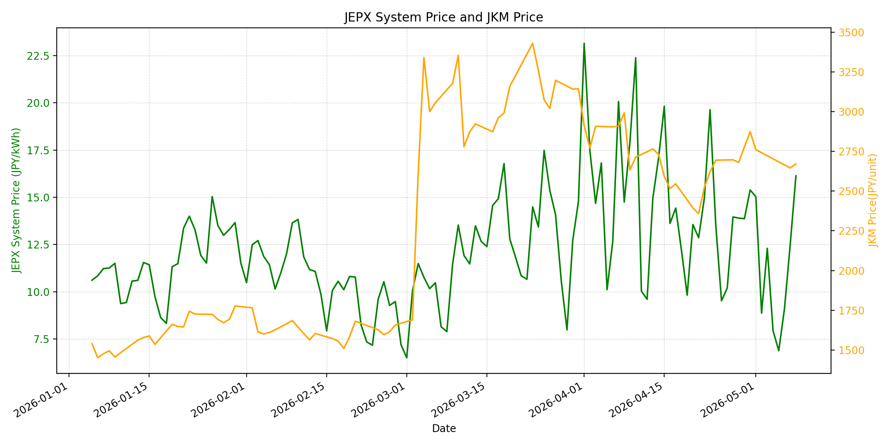
WTIの推移グラフ
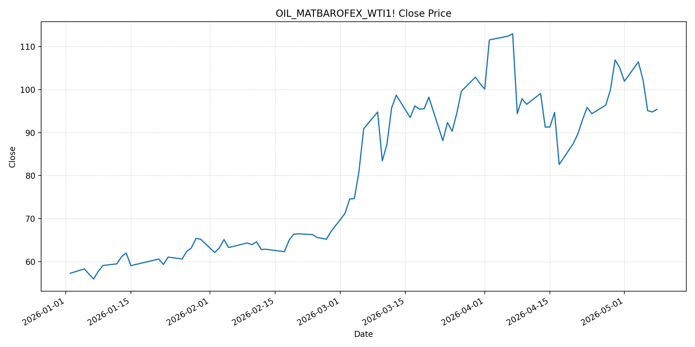
JEPXシステムプライス
JEPXは受渡日ベースの最新非空値で評価しています。最新値は 2026-05-11 分です。先週終値は 2026-05-04 時点の直近値、先月終値は 2026-04-30 時点の直近値で評価しています。
| エリア | 当日価格 | 前日価格 | 前日比（％） | 先週終値 | 先週比（％） | 先月終値 | 先月比（％） | 過去最高値 | 最高値比（％） |
|---|---|---|---|---|---|---|---|---|---|
| システム | 12.06 | 8.97 | 34.45 | 7.94 | 51.89 | 15.39 | -21.64 | 64.06 | -81.18 |
| 北海道 | 14.32 | 9.94 | 44.06 | 11.61 | 23.34 | 12.11 | 18.25 | 73.92 | -80.63 |
| 東北 | 14.33 | 9.96 | 43.88 | 11.61 | 23.43 | 12.11 | 18.33 | 84.92 | -83.12 |
| 東京 | 17.72 | 10.33 | 71.54 | 11.94 | 48.41 | 19.16 | -7.52 | 86.13 | -79.43 |
| 中部 | 17.63 | 9.6 | 83.65 | 10.01 | 76.12 | 16.47 | 7.04 | 52.06 | -66.14 |
| 北陸 | 12.52 | 7.66 | 63.45 | 5.31 | 135.78 | 13.32 | -6.01 | 46.48 | -73.07 |
| 関西 | 12.52 | 7.66 | 63.45 | 5.31 | 135.78 | 13.32 | -6.01 | 46.48 | -73.07 |
| 中国 | 8.07 | 7.66 | 5.35 | 5.31 | 51.98 | 13.32 | -39.41 | 46.48 | -82.64 |
| 四国 | 6.53 | 6.19 | 5.49 | 5.29 | 23.44 | 9.46 | -30.97 | 46.48 | -85.95 |
| 九州 | 8.07 | 7.66 | 5.35 | 5.06 | 59.49 | 12.5 | -35.44 | 40.54 | -80.1 |
LNG先物価格
最新値は 2026-05-08 の LNG(close) です。先週終値は 2026-05-01 時点の直近値、先月終値は 2026-04-30 時点の直近値で評価しています。
| 当日価格 | 前日価格 | 前日比（％） | 先週終値 | 先週比（％） | 先月終値 | 先月比（％） | 過去最高値 | 最高値比（％） |
|---|---|---|---|---|---|---|---|---|
| 2671 | 2646 | 0.94 | 2761 | -3.26 | 2874 | -7.06 | 10319 | -74.12 |
石油先物価格
最新値は 2026-05-08 の OIL(close) です。先週終値は 2026-05-01 時点の直近値、先月終値は 2026-04-30 時点の直近値で評価しています。
| 当日価格 | 前日価格 | 前日比（％） | 先週終値 | 先週比（％） | 先月終値 | 先月比（％） | 過去最高値 | 最高値比（％） |
|---|---|---|---|---|---|---|---|---|
| 95.42 | 94.81 | 0.64 | 101.94 | -6.4 | 105.07 | -9.18 | 123.7 | -22.86 |
ニュース
イラン情勢に関するニュース
- 2026年5月10日、APは、イランがパキスタン仲介で米国の停戦案に回答したものの、トランプ米大統領が「受け入れ不能」と拒否したと報じました。米案は戦争終結、ホルムズ海峡再開、核計画縮小を含み、イラン側は制裁解除、海峡の主権、凍結資産解除などを求めています。 参照: AP, 2026-05-10
- 2026年5月11日、Guardianは、イラン案をめぐり米国側が拒否姿勢を示すなか、UAE・クウェートの領空でドローン事案、カタール沖の船舶火災、英仏主導の海上安全保障構想へのイラン警告が重なり、4月8日からの停戦が再び脆弱化していると報じました。 参照: Guardian, 2026-05-11
ホルムズ海峡経由の石油・LNGに関するニュース
- 2026年5月10日、APは、戦争前には世界の取引原油の約2割と大量の天然ガス・肥料・石油製品がホルムズ海峡を通過していたが、イランによる水路支配と米国の海上封鎖が利用を複雑化させていると報じました。海峡再開は交渉の中心課題です。 参照: AP, 2026-05-10
- 同じAP報道では、Brent原油が 103.91 ドルまで上昇し、戦前の約 70 ドルを大きく上回る水準にあるとされています。ホルムズの通航不安は、LNG・原油のスポット価格だけでなく、輸送保険や代替航路コストにも残存しています。 参照: AP, 2026-05-10
ホルムズ海峡経由でない石油・LNGに関するニュース
- 2026年5月10日、APは、Saudi Aramcoが東西パイプラインを最大能力の 700 万バレル/日で稼働させ、ホルムズ海峡を避ける輸出に一部を振り向けていると報じました。ただし同社の通常生産量の一部にとどまり、非ホルムズ経路だけで供給制約を完全に吸収するのは難しい状況です。 参照: AP, 2026-05-10
- 直近24時間で、非ホルムズ系LNGの新規大型供給増を示す主要報道は確認できませんでした。Guardianは、在庫が供給ショックを吸収してきた一方で、海峡閉鎖が続くほど緊急備蓄の消耗と供給網の遅延が深まると報じています。 参照: Guardian, 2026-05-10
日本国内のイラン戦争に関係するニュース
- 直近24時間で、日本国内の電力会社、JEPX制度、または対イラン戦争を受けた新たな電力需給対策に関する主要公開報道は確認できませんでした。
- 関連する直近材料として、Japan Timesは2026年5月8日、和平が成立してもペルシャ湾からの原油出荷再開と世界の在庫回復には時間がかかり、夏場需要前に在庫がさらに削られる可能性があると報じています。日本の電力市場にとっては、国内スポットよりも燃料調達・在庫政策を通じた遅行リスクです。 参照: Japan Times/Reuters, 2026-05-08
インサイト
ニュース事項による日本の電力市場への影響（短期：数日〜1週間）
- JEPXシステムプライスは 12.06 円/kWhで前日比 34.45%、先週比 51.89% と反発しました。東京 17.72、中部 17.63 は前日比で大きく上がっており、燃料価格が下落基調でも、連休明けの需給や地域要因でスポットは上振れしています。
- LNGは 2671 と先週比 -3.26%、OILは 95.42 と先週比 -6.4% で、燃料コスト面では4月末より下押し方向です。ただし、停戦案拒否、海峡再開交渉の停滞、ドローン事案が重なり、燃料価格の下落が一方向に続くとは見込みにくいです。
- 数日〜1週間では、燃料安がJEPXの上値を抑える一方、ホルムズ関連ニュースが悪化すれば原油・LNGのリスクプレミアムが戻りやすいです。足元のJEPXは過去最高比では -81.18% と低位ですが、短期変動は大きくなっています。
ニュース事項による日本の電力市場への影響（長期：1ヶ月〜半年）
- 原油は先月比 -9.18%、LNGは先月比 -7.06% と、4月末の危機プレミアムからは低下しています。ホルムズ再開が実現すれば、日本の燃料費見通しは改善しますが、APとGuardianが示す通り、交渉不調と海上安全保障リスクが残っています。
- Aramcoの東西パイプライン稼働や日本の備蓄活用は供給安全保障に有効ですが、ホルムズ経由分を完全に代替するものではありません。1ヶ月〜半年では、輸送・保険・在庫再積み増しのコストが燃料費調整や相対契約に遅れて反映される可能性があります。
- 日本の電力市場では、現時点のJEPX水準だけを見ると危機的ではありません。ただし、燃料市場の在庫吸収力が弱まる局面に入るため、価格低下局面でも非ホルムズ調達、在庫、ヘッジを維持する判断が妥当です。